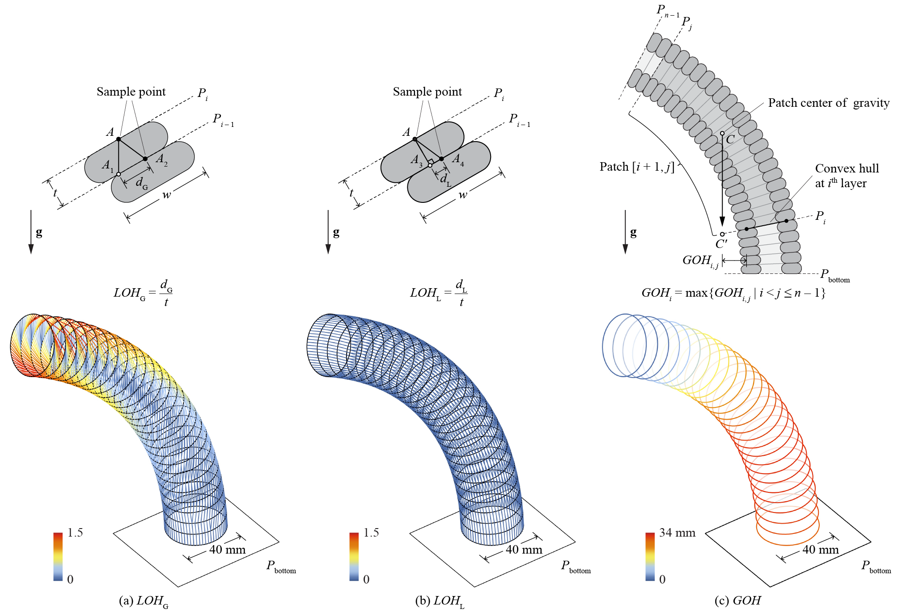
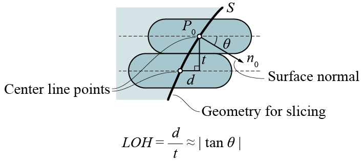
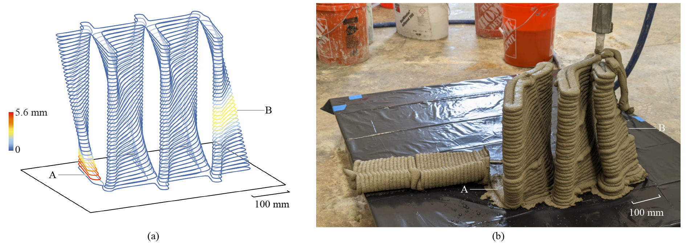

Buildability analysis
Ovenbird provides an agile method of assessing the buildability of a design and predicting failures caused by extreme geometrical features. The method is based purely on the geometric data of toolpath curves, regardless of material properties and the printing scheme. It analyzes the geometry's overhang, or how the toolpaths reach out horizontally without being supported.

Types of overhangs: (a) Local overhang by ground \(LOH_\mathrm{G}\); (b) local overhang by layer \(LOH_\mathrm{L}\); (c) global overhang \(GOH\) (1)
- Image adapted from: Y. Zhi, H. Chai, T. Teng, and M. Akbarzadeh, “Automated toolpath design of 3D concrete printing structural components,” Additive Manufacturing, p. 104662, 2025.
Local overhang
Local Overhang measures the overhang between adjacent layers. It assesses how much support a small toolpath segment receives from the previous layer.
The toolpath curves are represented by sample points that divide a curve into segments.
The local overhang (\(L O H\)) is a property of a sample point. Two types of local overhangs differ in non-parallel/rotary slicing:
-
Local overhang by ground (\(L O H_\mathrm{G}\), default) projects sample points along the direction of gravity onto the previous nozzle plane. The overhang distance \(d_\mathrm{G}\) is measured as the distance between the projected point and the closest support point on that layer. The local overhang is \(LOG_\mathrm{G}=d_\mathrm{G}/t\) where \(t\) is the layer thickness.
-
Local overhang by layer (\(L O H_\mathrm{L}\)), on the other hand, orients the sample points from the current nozzle plane to the previous nozzle plane and then calculates the local overhang in the same way. \(L O H_\mathrm{L}\) measures the discontinuation of the toolpaths across adjacent layers. If we assume the material does not slump within the same layer and the friction between layers is sufficient, then \(L O H_\mathrm{L}\) is a better criterion for determining buildability.
To visually inspect \(L O H\), the lines between each sample point and its support point are drawn and color-coded. (1) (2)
- We don't supporting baking the lines since they are too heavy for the Rhino environment.
-
Example File
6. Printability Analysis and Optimization → (1) Local Overhang Analysis
Local overhang from mesh
The computation of Local Overhang is time-consuming. Mesh Overhang provides an faster alternative that looks at the input geometry if it is a mesh without the need of 
Slice.

Normal direction and overhang
On the input mesh, the local overhang of a sample point can be approximated as the tangent of the angle between the sample point's normal direction on the surface and the world XY plane, \(LOH = d/t \approx \tan\theta\). Since Mesh Overhang does not consult the actual layers, it cannot replace Local Overhang. (1)
- When a curve is floating with no direct support,
Local Overhangcreate long lines that highlights the curve. It is less visible withMesh Overhang, especially when the floating part has a cone-like shape.

Mesh overhang and local overhang. You may adjust the resolution of the sample points in solving the local overhang
Global overhang
Global Overhang assesses if a patch of multiple layers is prone to collapse. It is a property of an entire toolpath curve. It can be solved after the toolpaths are organized as one-extrusion patches.
Essentially, the global overhang (\(GOH\)) of a curve is the maximal distance between the projected center of gravity of a patch supported by it and its convex hull (\(=0\) if the projected center of gravity is inside the convex hull). It measures how far the center of gravity of a branch reaches out without supprt. We would like all curves to have global overhangs of \(0\). (1)
-
Example File
6. Printability Analysis and Optimization → (3) Global Overhang Analysis
Assessments
Metrics of buildability apply to different types of materials. The following table summarizes how to select the overhang solver for buildability assessments and failure predictions.
| Type | Local overhang by ground | Local overhang by layer | Global overhang |
|---|---|---|---|
| Symbol | \(L O H_\mathrm{G}\) | $L O H_\mathrm{L} $ | \(G O H\) |
| Investigates... | Local features | Local features | Global shape |
| Bonding between layers and with the print bed | Low | High | Low |
| Hardening speed | Slow | Fast | Irrelevant |
| Material and max value |
|
|
|
Suggested combination of buildability metrics and materials
Here is an example of failure prediction using global overhang. For materials that hardens and bonds fast (e.g. polymers), \(G O H\) can be larger than \(0\) (relevant to size of geometry).

Failure prediction of global overhang. The print collapsed at both locations with \(GOH>0\) (1)
- Image adapted from: Y. Zhi, H. Chai, T. Teng, and M. Akbarzadeh, “Automated toolpath design of 3D concrete printing structural components,” Additive Manufacturing, p. 104662, 2025.